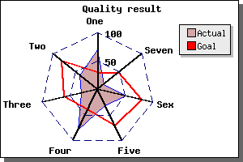

目次 前へ 次へ
レーダー プロットは、複数の対象について数値を比較する場合に良く用いられます。それらは、個人の能力やスキルなどを対称的に表示させたい場合によく使用されます。 レーダー プロットの例を以下に掲載します（ウェブ プロット、スパイダー プロットとも呼ばれます）。ただ、レーダー プロットはグラフから正確な値を読み取ることには適していません。
 図 114：2 個のプロットを持つ一般的なレーダー プロットの例
[ソース]
- 各データ ポイントに軸がある。
- 各軸には任意のタイトルを付加でき、自動的に配置される。
- レーダー プロットは塗りつぶしにできる。
- 他のグラフと同様の形式でカラーやラインの幅を制御できる。
- タイトルや凡例をつけることができる。
- 1番目の軸は必ず垂直になっており、ラベルが付加されている。
- グリッドを使用できる(上記ではダッシュ線で描画)。
- 目盛りを描画できる (上記では省略)。
- グラフのサイズや位置を制御できる。
- 複数のプロットを 1 つのグラフ内に描画できる。
以下の例では、簡単なレーダー プロットと複雑なレーダー プロットの描画方法を解説します。これまでと同様の手順でグラフを作成できます。
目次 前へ 次へ